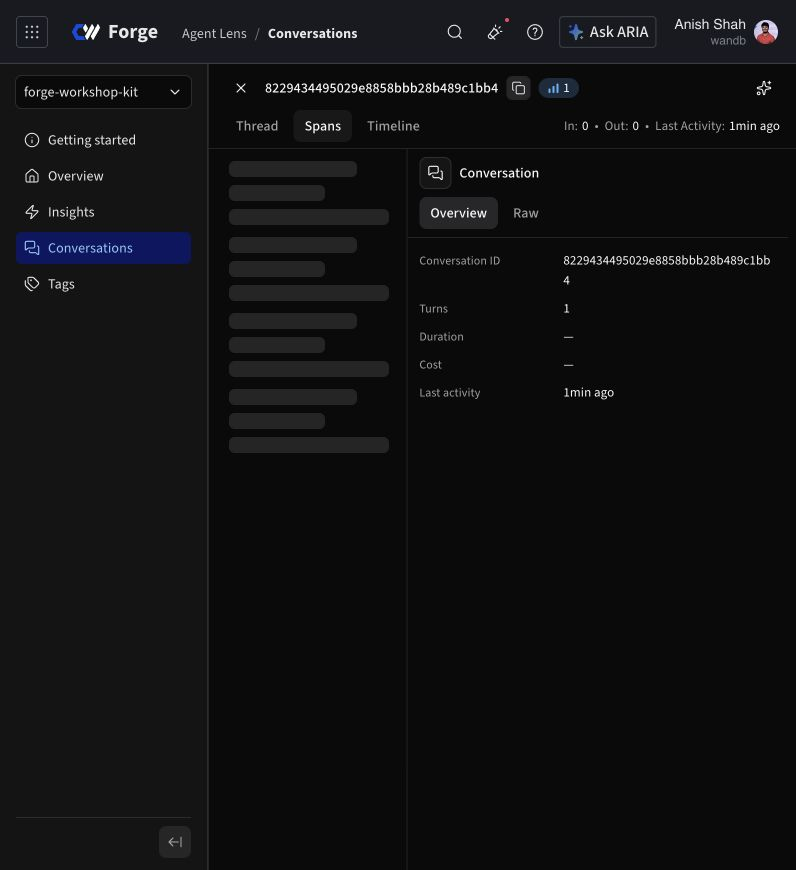

RECORDED EXAMPLE · 4 / 6Now let an agent edit the program.
Round one proposed competing changes. The selected change replaced squared loss with absolute loss. Its validation error fell from 0.122116 to 0.120553. A dilated-convolution candidate regressed.
--- previous/candidate.py
+++ proposed/candidate.py
@@ -1,32 +1,25 @@
"""Editable research code. The data split and final scorer live elsewhere."""
import torch
from torch import nn
-
def build_model(input_shape, config):
width=config.get('width',16)
architecture=config.get('architecture','mlp')
if len(input_shape)==2:
if architecture=='mlp':
- return nn.Sequential(nn.Flatten(),nn.Linear(input_shape[0]*input_shape[1],width),
- nn.ReLU(),nn.Linear(width,1))
- return nn.Sequential(nn.Conv1d(input_shape[0],width,5,padding=2),nn.ReLU(),
- nn.AdaptiveAvgPool1d(1),nn.Flatten(),nn.Linear(width,1))
+ return nn.Sequential(nn.Flatten(),nn.Linear(input_shape[0]*input_shape[1],width),nn.ReLU(),nn.Linear(width,1))
+ return nn.Sequential(nn.Conv1d(input_shape[0],width,5,padding=2),nn.ReLU(),nn.AdaptiveAvgPool1d(1),nn.Flatten(),nn.Linear(width,1))
class ImagePredictor(nn.Module):
def __init__(self):
super().__init__()
- self.net=nn.Sequential(nn.Conv2d(2,width,3,padding=1),nn.ReLU(),
- nn.Conv2d(width,width,3,padding=1),nn.ReLU(),
- nn.Conv2d(width,1,3,padding=1))
+ self.net=nn.Sequential(nn.Conv2d(2,width,3,padding=1),nn.ReLU(),nn.Conv2d(width,width,3,padding=1),nn.ReLU(),nn.Conv2d(width,1,3,padding=1))
def forward(self,x):
prediction=self.net(x)
return prediction+x[:,1:2] if architecture=='residual' else prediction
return ImagePredictor()
-
def training_loss(prediction,target,mask):
- return ((prediction-target).square()*mask).sum()/mask.sum()
-
+ return ((prediction-target).abs()*mask).sum()/mask.sum()
def fit(model,x,y,mask,config):
optimizer=torch.optim.Adam(model.parameters(),lr=config.get('learning_rate',.001))
Round two tried learning-rate decay. Validation worsened, so composition retained the previous code.
Open the actual research-agent conversation ↗
